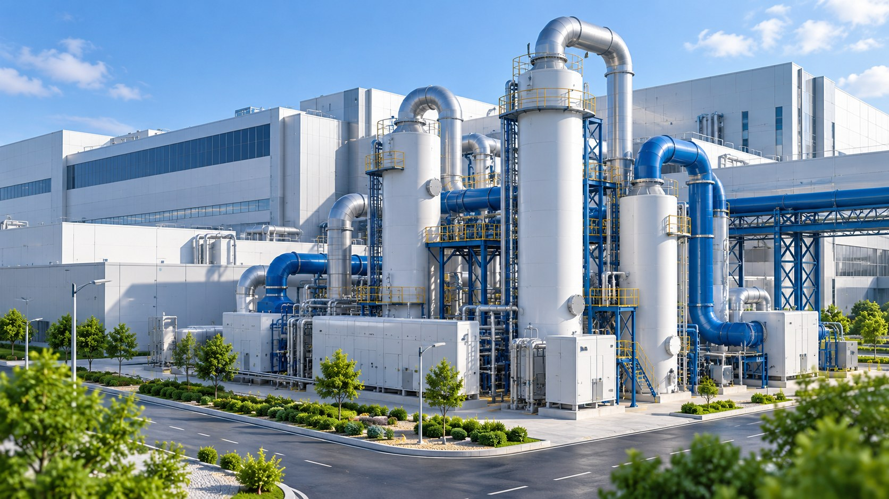
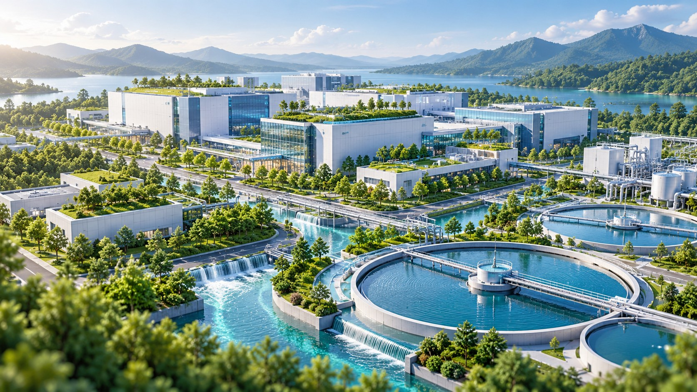
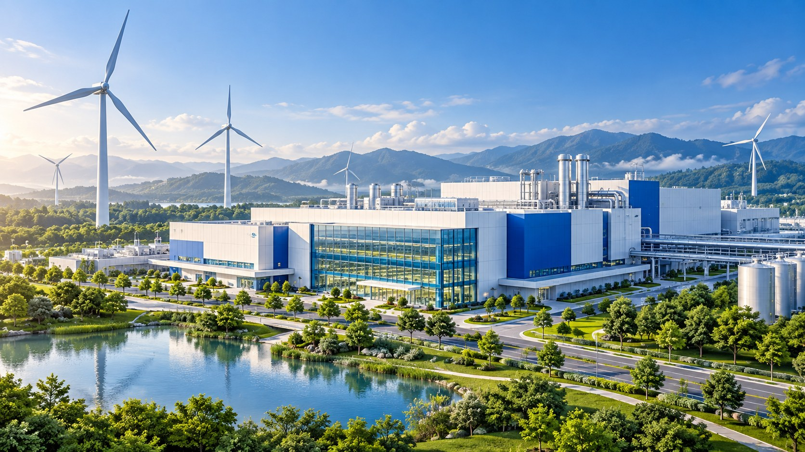
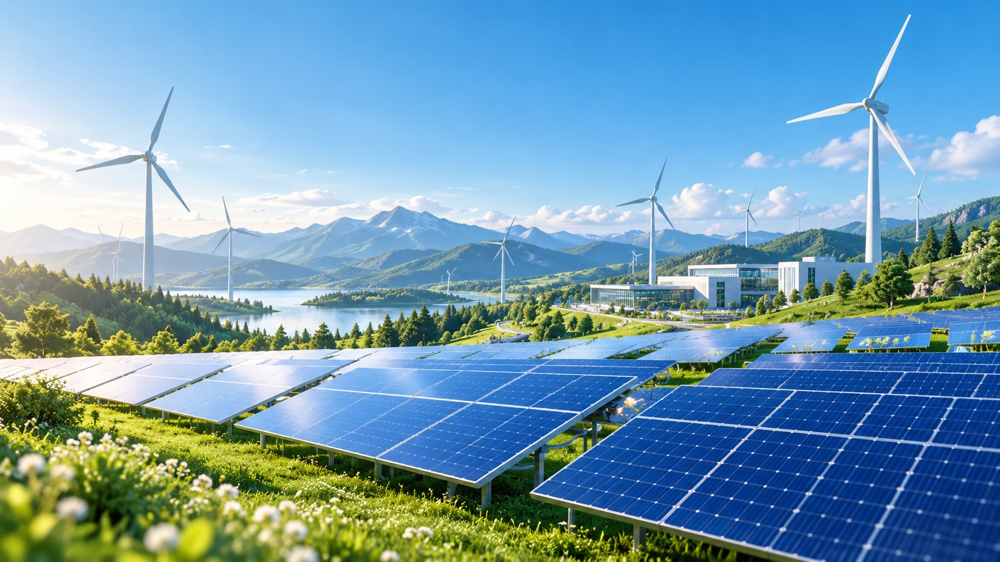

Innovation
Innovation01 / 09
Intel Founded
Explore milestone
Robert Noyce and Gordon Moore rename the newly formed company NM Electronics to Intel Corporation, laying the foundation for decades of technological innovation.
A LEGACY OF LOOKING FORWARD
From the first microprocessors to a more sustainable future. Explore the milestones shaping Intel’s impact on technology and our planet.
Explore the journeyTHE INTEL JOURNEY
Scroll sideways or use the arrows. Hover or focus on a card to discover more.Follow the timeline. Tap “Explore milestone” to discover more.
InnovationRobert Noyce and Gordon Moore rename the newly formed company NM Electronics to Intel Corporation, laying the foundation for decades of technological innovation.
 Innovation
InnovationIntel debuts the 4004, the world's first commercial microprocessor, igniting the microprocessor revolution and propelling the future of computing devices.
 Innovation
InnovationLaunch of the 8086 processor, establishing the x86 architecture that drives countless PCs and servers in the modern era.
 Innovation
InnovationIntel introduces the 386 processor with 32-bit architecture, ushering in a new era of performance and multitasking for personal computers.

SustainabilityThis year marks Intel's highest annual greenhouse gas emissions for operations. Over subsequent years, Intel invests heavily in chemical abatement, renewable energy, and energy-efficient manufacturing to reverse this trend.

SustainabilityIntel launches its RISE (Responsible, Inclusive, Sustainable, Enabling) strategy and 2030 goals, aiming to drive industry-wide progress on climate action, water stewardship, and waste reduction.

SustainabilityIntel announces its commitment to achieve net-zero greenhouse gas emissions (Scope 1 and 2) across its global operations by 2040, building on years of environmental initiatives.

SustainabilityThe company achieves 99% renewable electricity usage worldwide, helping to drastically lower carbon emissions and driving progress toward Intel's long-term sustainability goals.
Intel hosts its first Sustainability Summit, uniting suppliers, government officials, and industry leaders to collaborate on next-generation sustainable semiconductor manufacturing.